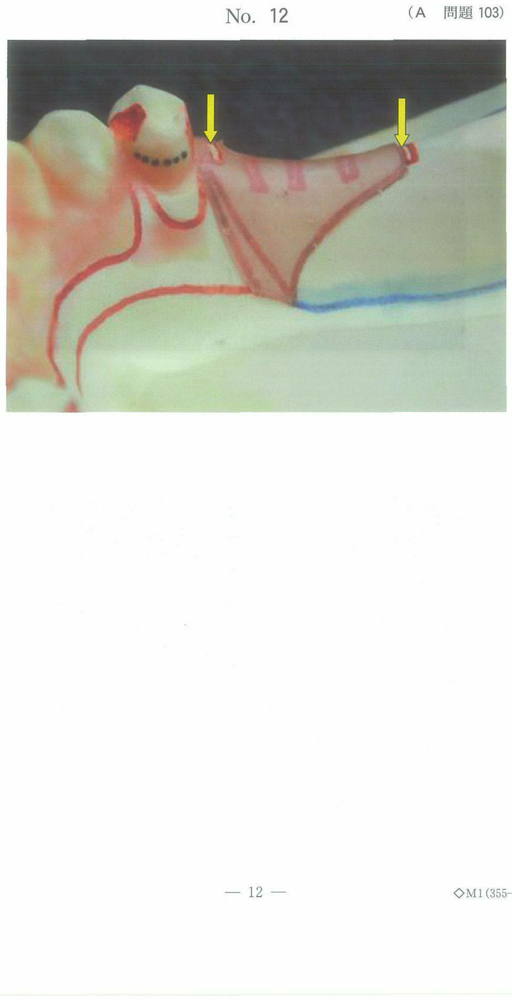

皮膚の切開は、皮下組織→筋膜→筋肉→骨膜の順に各層を確認しながら行う。顔面領域では審美性が要求されるため、術後の瘢痕が目立たないよう切開線の設定が重要である。
| 指標 | 定義 | 臨床的意義 |
|---|---|---|
| Langer割線 | 皮膚の緊張方向を連続的に連ねた線 | 割線に平行な切開は瘢痕が目立ちにくい |
| 皺線（表情皺） | 表情筋の走行に対して垂直に走る線（しわの方向） | 皺線に沿った切開は既存の皺に紛れて瘢痕が目立たない |
| 顎部線 | 角度をもって移行する部位の境界線（耳介→頸部、外鼻→口角など） | 影になる部位のため切開痕が目立たない |
| Bockenheimer線 | 顔面神経の走行に沿って設けられた切開線 | この線に沿って切開すれば顔面神経を切断しにくい |
切開はこれらの指標（特にしわの方向）に沿って行うことで、瘢痕が目立たなくなる。切開後の瘢痕拘縮は切開線に沿って生じ、その部位が短縮する → 三角弁（Z形成術）を付加して拘縮の影響を軽減する。
教科書（p.502）に記載される代表的な顔面切開線を以下に示す。
| 切開線 | 位置・走行 | 主な適応 |
|---|---|---|
| 額部切開線 （横頭部切開線） |
額の横しわに沿う水平切開 | 前頭骨骨折、前頭洞の手術 |
| 眉毛下切開 | 眉毛の下縁に沿う切開 | 眼窩上縁・前頭骨へのアプローチ |
| 耳介前切開 | 耳珠前方の皮膚溝に沿う切開 | 顎関節・関節突起・頬骨弓へのアプローチ |
| Dieffenbach切開線 | 耳前部から下顎角に向かう切開 | 耳下腺・顎関節の手術 |
| Weber切開線 | 鼻翼基部から上口唇を経て鼻中隔に沿う切開 | 上顎の腫瘍手術 |
| 鼻唇溝切開線 | 鼻唇溝（ほうれい線）に沿う切開 | 上顎・頬部へのアプローチ |
| Velpeau切開線 | 下口唇正中を下方へ延長する切開 | 下顎正中部の手術 |
| 顎下部切開 | 下顎骨下縁の約2横指（1.5〜2cm）下方、しわに沿う水平切開 | 顎下隙・翼突下顎隙の膿瘍排膿、下顎骨骨折の整復固定 |
皮膚 → 皮下組織 → 広頸筋（platysma）→ 顎下腺被膜 → 顎下隙
広頸筋を切開した後、広頸筋の深層に顔面神経下顎縁枝が走行するため、広頸筋より深部では鈍的剥離を行い神経損傷を防ぐ。
Risdon切開は下顎角部へのアプローチに用いられる。下顎角の下方約2横指、下顎骨下縁に沿うように切開する。下顎角骨折や下顎枝の手術に用いられる。顎下部切開と同様、顔面神経下顎縁枝の損傷に注意する。
顎下隙に到達するための切開部位の写真（別冊No.13）を別に示す。
適切なのはどれか。1つ選べ。

【解説】顎下隙へのアプローチには顎下部切開を用いる。写真のイは下顎骨下縁の約2横指下方に位置する水平な切開線であり、これが正解である。